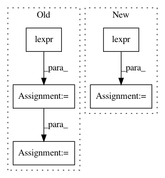

9ebe118cd1db05b88942e3eac3a9bfd951c446ae,scripts/semantic_index.py,SemanticIndex,get_semantic_representation,#SemanticIndex#Any#Any#,49
Before Change
// Assign coq types.
ccg_tree.set("coq_type", ccg_tree[0].attrib.get("coq_type", ""))
else:
predicate_left = lexpr(ccg_tree[0].get("sem"))
predicate_right = lexpr(ccg_tree[1].get("sem"))
semantics = semantic_template(predicate_left).simplify()
semantics = semantics(predicate_right).simplify()
// Assign coq types.
coq_types_left = ccg_tree[0].attrib.get("coq_type", "")
coq_types_right = ccg_tree[1].attrib.get("coq_type", "")
After Change
coq_types_list = []
for path in var_paths:
child_node = get_node_at_path(ccg_tree, path)
child_semantics = lexpr(child_node.get("sem"))
semantics = semantics(child_semantics).simplify()
child_coq_types = child_node.get("coq_type", None)
if child_coq_types is not None and child_coq_types != "":
coq_types_list.append(child_coq_types)
In pattern: SUPERPATTERN
Frequency: 3
Non-data size: 5
Instances
Project Name: mynlp/ccg2lambda
Commit Name: 9ebe118cd1db05b88942e3eac3a9bfd951c446ae
Time: 2016-11-30
Author: pascual@nii.ac.jp
File Name: scripts/semantic_index.py
Class Name: SemanticIndex
Method Name: get_semantic_representation
Project Name: mynlp/ccg2lambda
Commit Name: 8c24a67105b529fb1586399b9ddebf1988f07110
Time: 2017-10-30
Author: pasmargo@gmail.com
File Name: scripts/semantic_types_test.py
Class Name: combine_signatures_or_rename_predsTestCase
Method Name: test_different_in_same_expression
Project Name: mynlp/ccg2lambda
Commit Name: 6c9a23c7e1d768296ba7768f92995c1382c09006
Time: 2017-10-30
Author: pasmargo@gmail.com
File Name: scripts/semantic_types_test.py
Class Name: combine_signatures_or_rename_predsTestCase
Method Name: test_different_in_same_expression